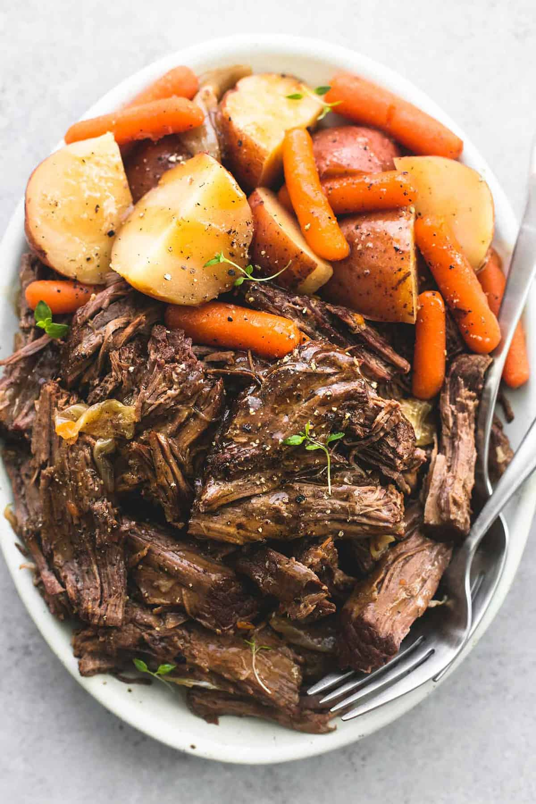

Pot Roast

Description
Juicy and tender instant pot pot roast and potatoes
with gravy makes the perfect family-friendly dinner.
This easy one pot dinner recipe will please even the
picky eaters!
Ingredients
- 3-5 pound beef chuck roast
- 1 tablespoon oil
- 1 teaspoon salt
- 1 teaspoon onion powder
- 1 teaspoon garlic powder
- 1/2 teaspoon black pepper
- 1/2 teaspoon smoked paprika - optional
- 1 pound baby red potatoes
- 4 large carrots - chopped into large chunks
- 1 large yellow onion - chopped
- 4 cups beef broth
- 2 tablespoons worcestershire sauce
- 1/4 cup water
- 2 tablespoons corn starch
Steps
- Turn on your instant pot and set it to "saute".
In a small bowl stir together salt, pepper, garlic
powder, onion powder, and smoked paprika. Rub
mixture all over the roast to coat all sides.
- Drizzle oil in instant pot, wait about 30 seconds,
then use tongs to place roast in the pot. Do not
move it for 3-4 minutes until well-seared and
browned. Use tongs to turn the roast onto another
side for 3-4 minutes, repeating until all sides
are browned.
- Switch instant pot to “pressure cook” on high and
set to 60-80 minutes (60 for a 3 pound roast, 80
for a 5 pound roast. see notes if using baby
carrots). Add potatoes, onions, and carrots to
pot (just arrange them around the roast) and pour
beef broth and worcestershire sauce over
everything. Place lid on the pot and turn to
locked position. Make sure the vent is set to the
sealed position.
- When the cooking time is up, do a natural release
for 10 minutes (don't touch anything on the pot,
just let it de-pressurize on its own for 10
minutes). After 10 minutes, turn vent to the
venting release position and allow all of the
steam to vent and the float valve to drop down
before removing the lid.
- Transfer the roast, potatoes, onions, and carrots
to a platter and shred the roast with 2 forks into
chunks. Use a handheld strainer to scoop out bits
from the broth in the pot. Set instant pot to
"soup" setting. Whisk together the water and corn
starch. Once broth is boiling, stir in corn starch
mixture until the gravy thickens. Add salt, pepper,
and garlic powder to taste.
- Serve gravy poured over roast and veggies and
garnish with fresh thyme or parsley if desired.